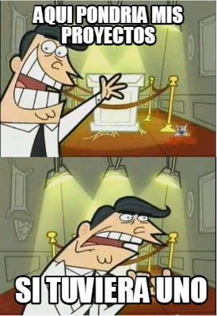

<div class="cont-main flex">
    <div class="cont-one flex">
        <button mat-button routerLink="/"> Inicio</button>
        <mat-icon>arrow_forward</mat-icon>
        <button mat-button routerLink="/notfound"> NotFound</button>
    </div>
    <div class="cont-img flex">
        
    </div>
</div>